Organic Chemistry Made Simple for JAMB Candidates
Organic chemistry looks scary because of the long names. Learn the families and naming rules and it becomes easy.
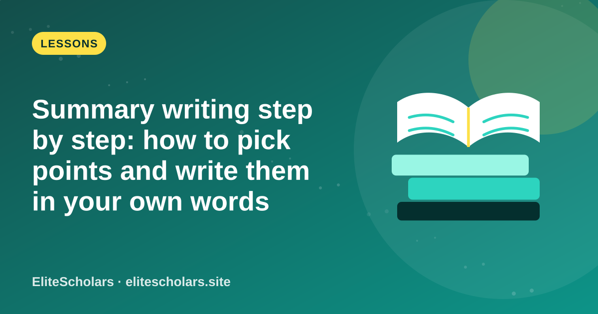
Summary writing step by step: how to pick points and write them in your own words
Summary questions reward students who can find the right points and say them briefly in their own words. Follow this step-by-step method with a fully worked example.

Why Sleep Matters More Than Extra Study Hours
Late-night cramming feels heroic, but sleep is when your brain files what you learned.
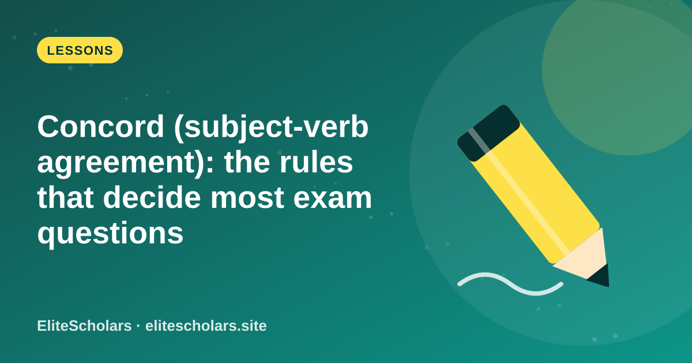
Concord (subject-verb agreement): the rules that decide most exam questions
Concord means the verb must agree with its subject. Learn the handful of rules that decide most WAEC and JAMB lexis and structure questions, with worked examples.
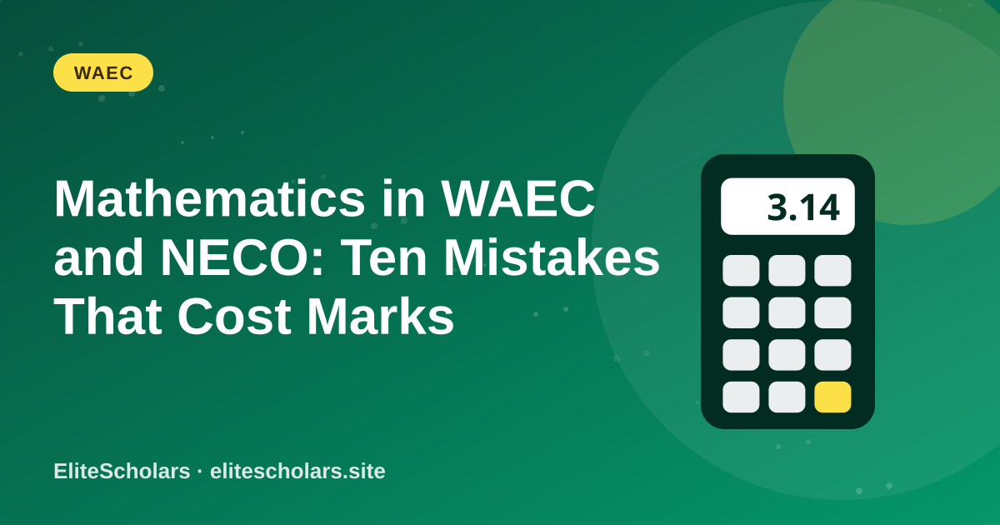
Mathematics in WAEC and NECO: Ten Mistakes That Cost Marks
Most lost marks are not from lack of knowledge but from preventable errors. Learn to avoid them.
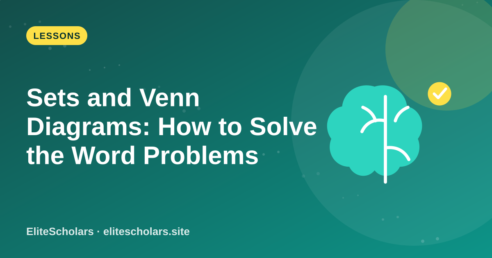
Sets and Venn Diagrams: How to Solve the Word Problems
Set questions look confusing until you learn the order for filling in a Venn diagram. Work through two-set and three-set problems with the right formulas.

How to Write WAEC Essay Answers That Score High Marks
Examiners award marks for structure and clarity. Learn the pattern and your essays improve at once.
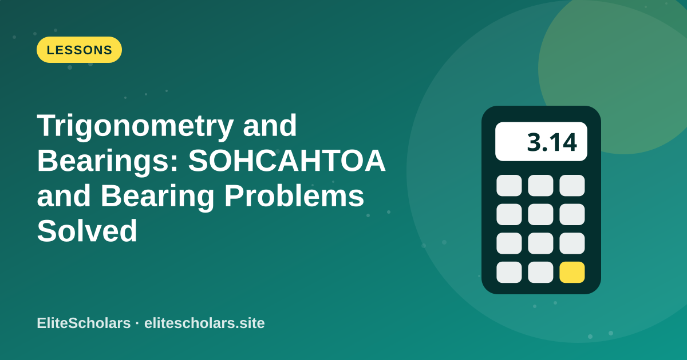
Trigonometry and Bearings: SOHCAHTOA and Bearing Problems Solved
Use SOHCAHTOA to find sides and angles in right-angled triangles, then apply it to elevation and bearing problems with every step shown.
How to Learn From a Wrong Answer in Five Minutes
A wrong answer is the most valuable thing in your study session, but only if you do something with it.
Mean, Median and Mode (Including Grouped Data) Solved Step by Step
Find the mean, median and mode from a list and from a grouped frequency table, with every step shown and checked.
Exam Anxiety: Seven Simple Techniques That Help
A little nervousness helps focus. Too much blocks memory. Here is how to keep it in the useful zone.

Probability Made Simple: Dice, Coins, Cards and Bags, With Solved Examples
Probability questions follow a small number of patterns. Learn the basic formula, the AND and OR rules, and how to handle bags with and without replacement.

JAMB Government and Economics: Topics That Pay Off
Two popular arts and social science subjects, one approach: learn the core concepts and link them to Nigerian examples. Here are the topics to prioritise and how to answer them.
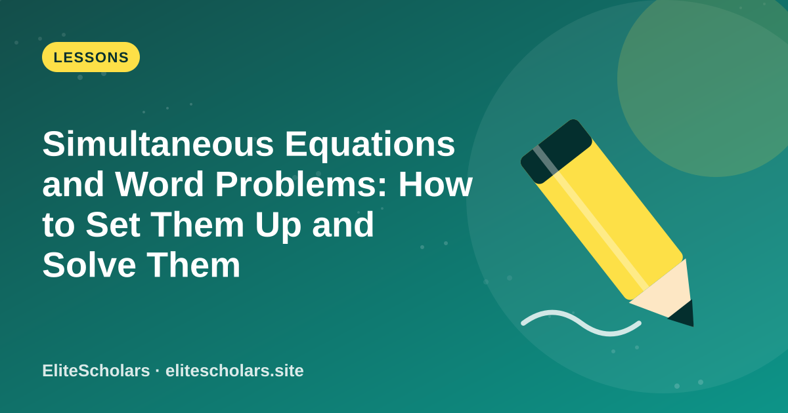
Simultaneous Equations and Word Problems: How to Set Them Up and Solve Them
Learn to solve simultaneous equations by elimination and substitution, then turn word problems into equations step by step. All examples are checked.
JAMB Literature in English: How to Handle the Prescribed Texts
Literature rewards readers, not guessers. Here is how to plan your reading of the prescribed texts, what to note in each, and how to answer the question types.
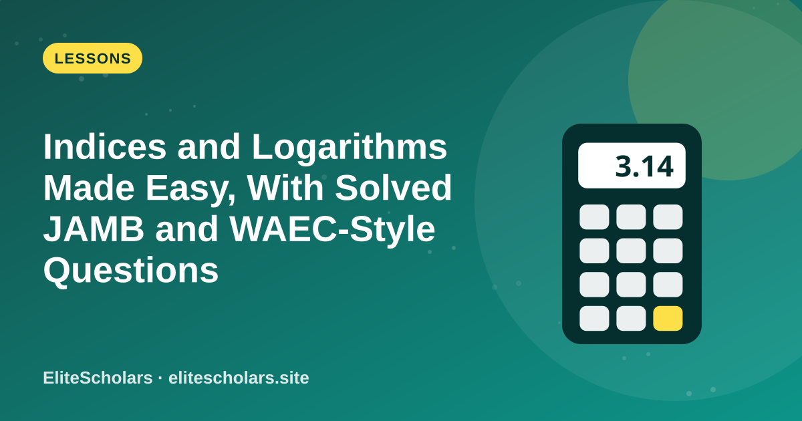
Indices and Logarithms Made Easy, With Solved JAMB and WAEC-Style Questions
Indices and logarithms are two sides of the same idea. Learn the laws, see them applied in solved questions, and avoid the slips that cost marks.
How to Turn Your Lecture Notes Into a Study Pack in 30 Minutes
Notes are only useful if you can test yourself with them. Here is a 30-minute method that converts a lecture's notes into questions, flashcards and a one-page summary.
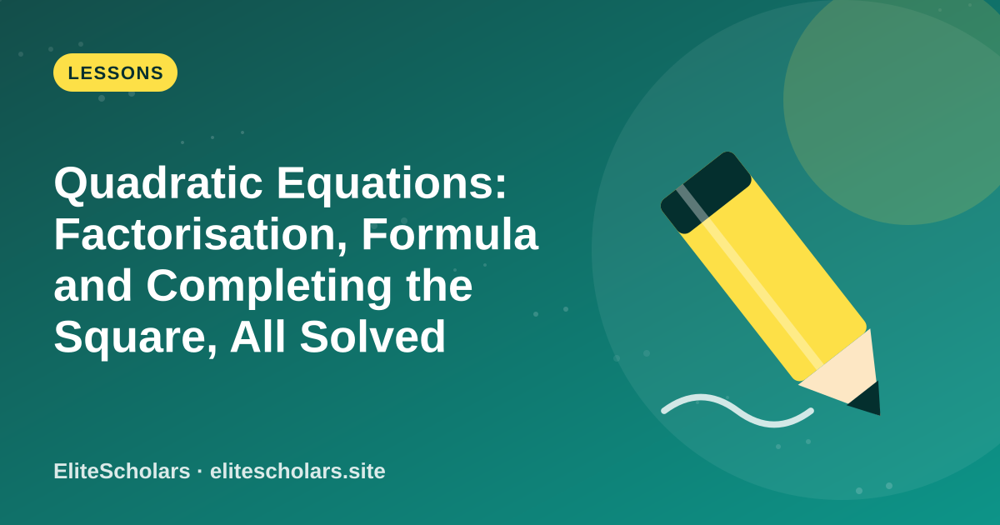
Quadratic Equations: Factorisation, Formula and Completing the Square, All Solved
Three methods, one equation type. See how to solve quadratics by factorisation, by the formula and by completing the square, and how to know which method to pick.
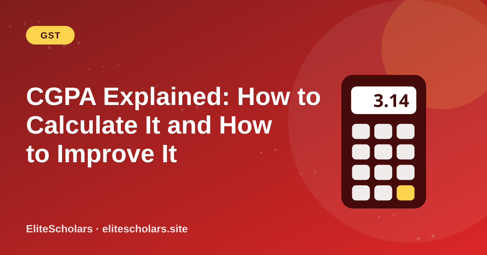
CGPA Explained: How to Calculate It and How to Improve It
Many students do not understand how CGPA is calculated until it is too late. Here is the full method on a 5.0 scale, with worked examples and a realistic plan to improve.
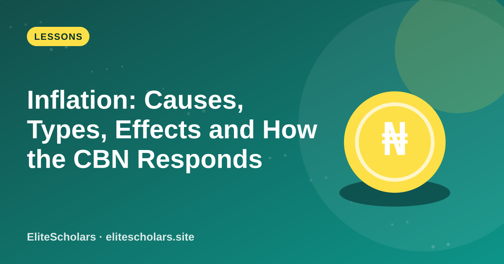
Inflation: Causes, Types, Effects and How the CBN Responds
Inflation is a sustained rise in the general price level. This lesson covers its types, causes, who wins and loses, the formula for the inflation rate, and the tools the CBN uses to control it.

How to Survive Your First Semester in a Nigerian University
Freshers' week is fun, but the first semester sets your CGPA foundation. Here is a week-by-week plan, a study routine and the traps to avoid.
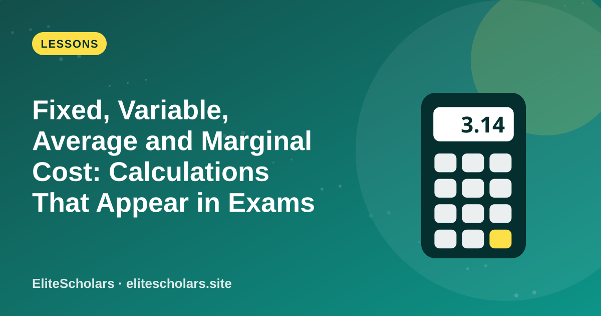
Fixed, Variable, Average and Marginal Cost: Calculations That Appear in Exams
Total cost, average cost and marginal cost questions are among the easiest marks in Economics if you know the formulas. Here is every formula, one full cost table and the traps examiners set.
GST Courses Explained: Why Every Nigerian University Student Takes Them
GST is not a punishment. It is a compulsory set of general courses with real marks that count towards your CGPA, and here is how to handle them well.
The Production Possibility Curve Explained Simply (Opportunity Cost, Growth, Efficiency)
The production possibility curve (PPC) shows what an economy can produce when resources are limited. Learn to read it, calculate opportunity cost from it, and explain growth and unemployment on it.
JAMB Sciences: Quick Wins in Biology, Chemistry and Physics
Each JAMB science has predictable high-yield areas. Here is where to focus in Biology, Chemistry and Physics, with worked examples you can copy.
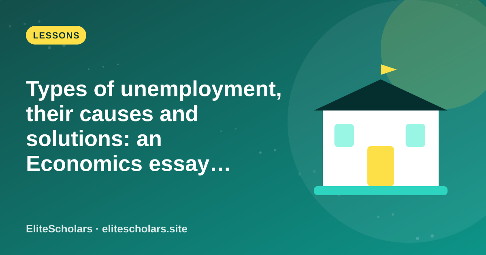
Types of unemployment, their causes and solutions: an Economics essay guide using Nigeria
Frictional, structural, cyclical, seasonal and more: learn each type of unemployment with a Nigerian example, the causes, the solutions, and how to structure a full-marks essay answer.
JAMB CBT Day: What to Do the Night Before and the Morning Of
Small decisions on the day before your JAMB CBT can add or remove marks. Use this night-before and morning-of plan, plus a simple method for managing time inside the hall.
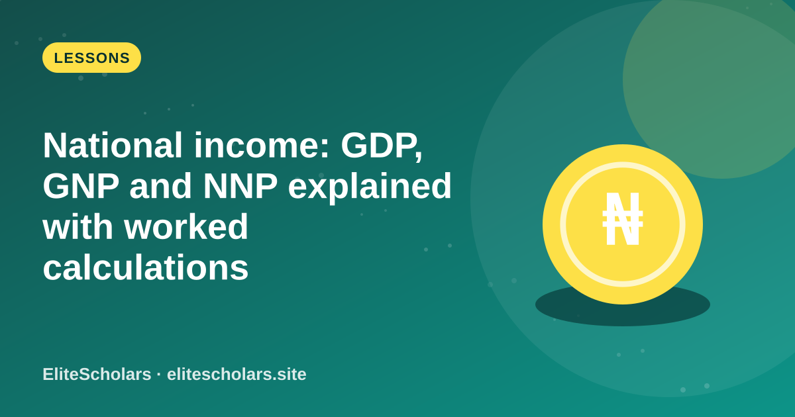
National income: GDP, GNP and NNP explained with worked calculations
GDP, GNP and NNP are close cousins that exam questions love to mix up. See how they connect, the three methods of measuring national income, and a full calculation you can copy.
Exam Malpractice and 'Expo' Scams: What It Can Cost You
Every exam season, desperate candidates pay for fake answers and leaked questions. Here is how the scams work, what malpractice can really cost you, and what to do with that money and time instead.

Price elasticity of demand: formula, types and calculations solved
Elasticity measures how strongly buyers react to a price change. Learn the formula, the five types, the total revenue test and four solved calculations, including income and cross elasticity.
Active Recall vs Re-reading: Why Highlighting Is Fooling You
Re-reading and highlighting feel productive but leave you with a false sense of knowing. Testing yourself, and spacing those tests, is what actually builds exam-day memory.
Demand and supply explained with Nigerian market examples (and how to draw the graphs)
Why does tomato get expensive in the dry season and cheap at harvest? Demand and supply answers it. Learn the laws, the five-step graph method and a solved equilibrium question.
The Pomodoro Technique for Exam Students: How to Study with Focus
Twenty-five focused minutes can accomplish more than two distracted hours. Here is how to apply it.
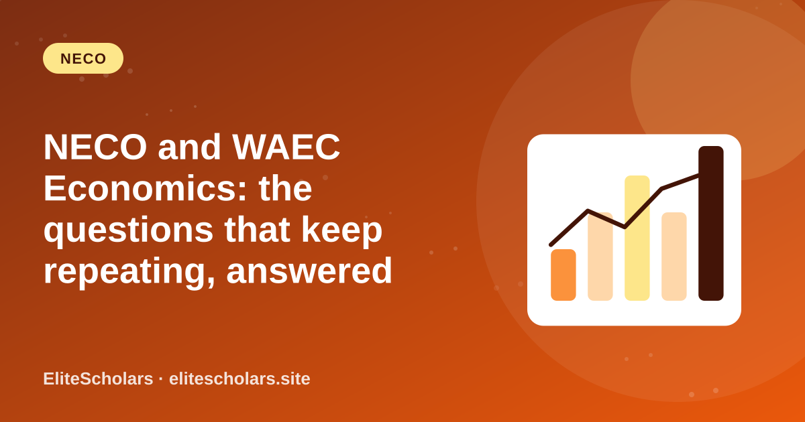
NECO and WAEC Economics: the questions that keep repeating, answered
Demand and supply, elasticity, opportunity cost, money and national income keep showing up. Here are the repeating question types with worked calculations and clean theory answers.
The Study Timetable That Actually Works (With Power Cuts, Chores and All)
A perfect timetable that ignores real life fails by Wednesday. Build one that survives your actual week.
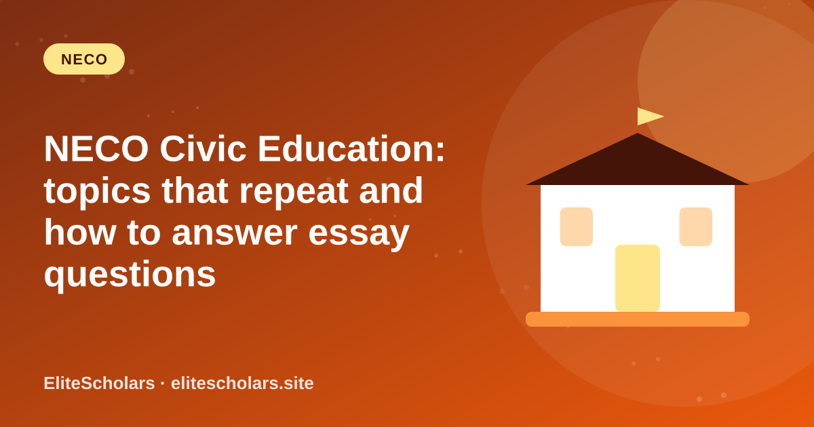
NECO Civic Education: topics that repeat and how to answer essay questions
Civic Education rewards clear definitions, well-organised points and Nigerian examples. Here are the recurring topics and a repeatable method for essay answers.
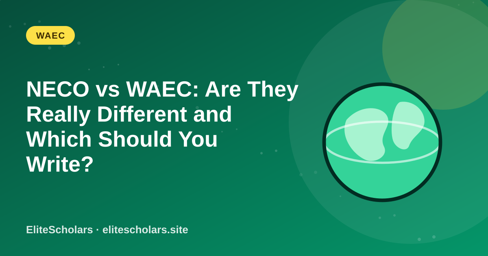
NECO vs WAEC: Are They Really Different and Which Should You Write?
Both are accepted for university admission, but there are differences in style, timing and perception worth knowing.
NECO Biology practical questions: specimens, spotting and drawing, solved with examples
How to handle spotting, drawing, food tests, magnification and ecology questions in the NECO Biology practical, with worked numbers and the marking habits that earn credit.
WAEC 2027: A Subject-by-Subject Study Plan for SS3 Students
Ten months sounds long until your mock exam arrives. Here is how to divide your year across your nine subjects.
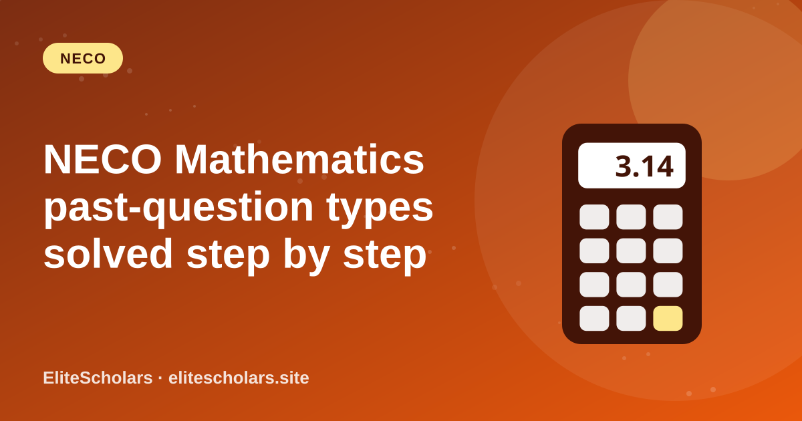
NECO Mathematics past-question types solved step by step
Five question types that keep appearing in NECO Mathematics, each solved line by line so you can see where the method marks are.
7 JAMB CBT Mistakes That Quietly Cost Candidates Marks
Most lost marks come from habits, not ignorance. Fix these seven and your score moves without learning anything new.
NECO English Language essays: formal letter, article, speech and narrative, with a model outline for each
Most candidates lose essay marks on format and expression, not on ideas. Here is how to set out a formal letter, article, speech and narrative, with an outline you can reuse.
How to Choose the Right JAMB Subject Combination for Your Course
The wrong combination can disqualify you before your score is even looked at. Check this before you register.
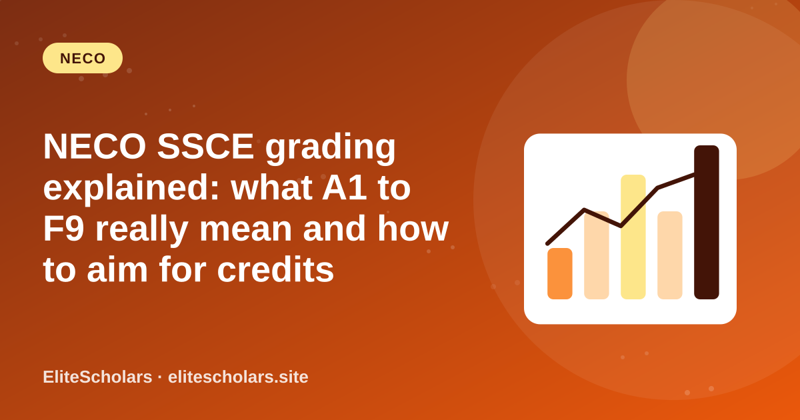
NECO SSCE grading explained: what A1 to F9 really mean and how to aim for credits
A1, B3, C6, F9: your NECO result is a row of codes, and each code decides what you can do next. Here is what every grade means, which ones count as a credit, and how to plan your marks.
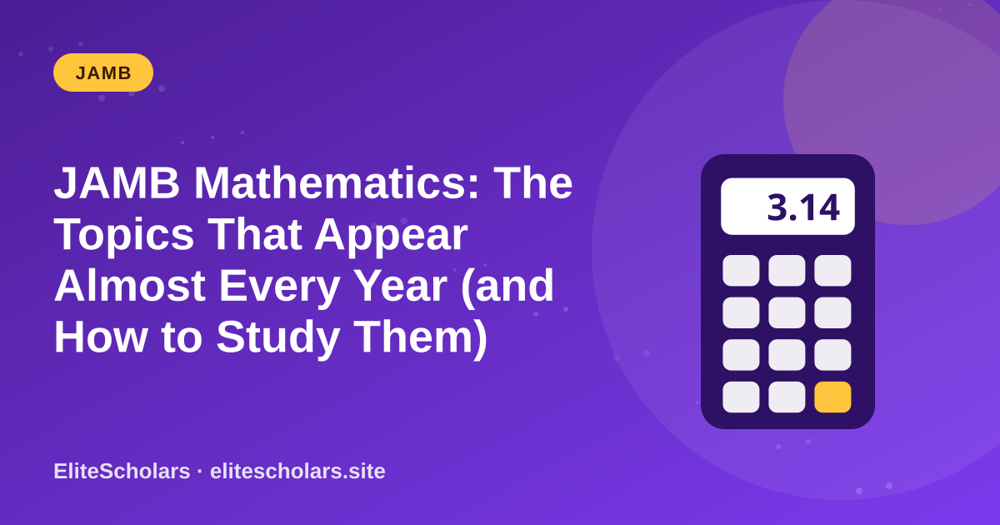
JAMB Mathematics: The Topics That Appear Almost Every Year (and How to Study Them)
You cannot study the whole of Maths in the time you have. Focus on these high-frequency areas first.
Use of English in JAMB: How to Score 70+ (Comprehension, Lexis and Structure)
English is compulsory, so every candidate writes it. Here is how to stop leaking marks in comprehension, lexis and structure.

How to Use JAMB Past Questions Properly (Most Students Do It Wrong)
Past questions are gold, but only if you use them as a diagnostic tool and not as a reading material to cram.
JAMB 2027: Why Starting in October Beats Starting in January (14-Week Plan)
Most candidates only panic when registration opens. Here is a simple 14-week plan that puts you months ahead before the crowd even begins.
How to Score 300+ in JAMB 2027: The Exact Study Plan That Actually Works
Scoring 300+ in JAMB is not about being naturally gifted. It is about having the right system and sticking to it. Here is the exact breakdown, from what to study to how to think in the exam hall.
Your 2026 JAMB Result Just Dropped — Here Is What Your Score Actually Means
Over 2.2 million candidates wrote the 2026 UTME. Results are dropping in batches right now. Before you spiral into panic or pop champagne, read this — because your raw score is only half the story.